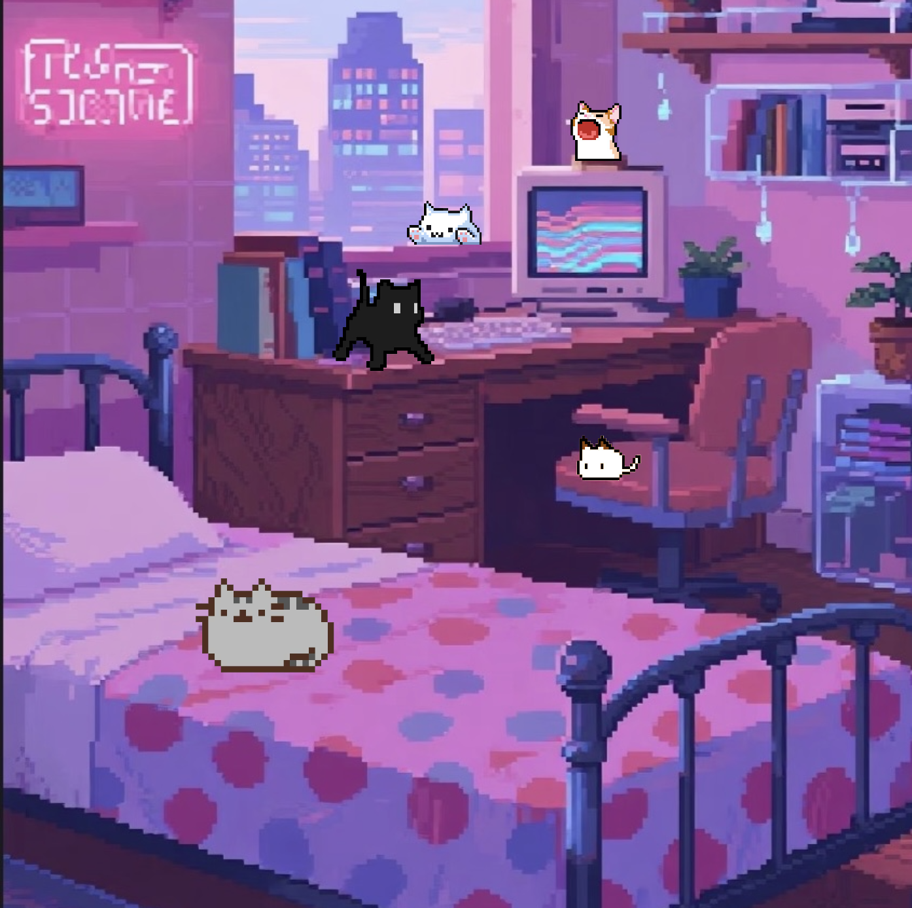
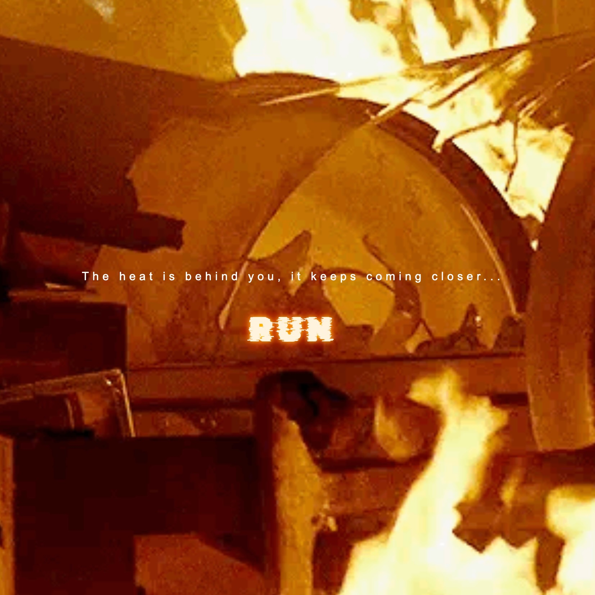

This is my website for IML300 class.

Inspired by lofi and pixel aesthetics, I want to explore sound as a way to create comfort and calm. I designed an interactive bedroom scene where users can click on different cats to play or stop sounds, creating a personalized and immersive sound experience.

This project creates an interactive experience that explores memory as a fluid and immersive space. Beginning in a state of pressure and urgency, the user moves toward a calmer, blue-toned environment where memories unfold through fragmented text and subtle interactions.